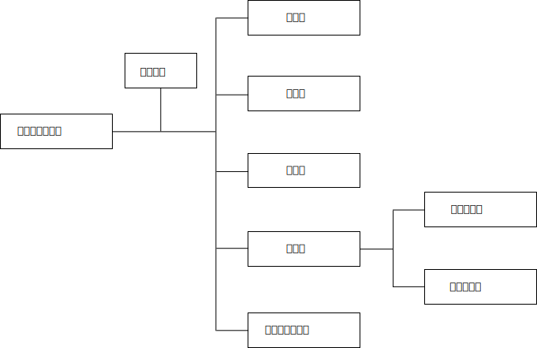
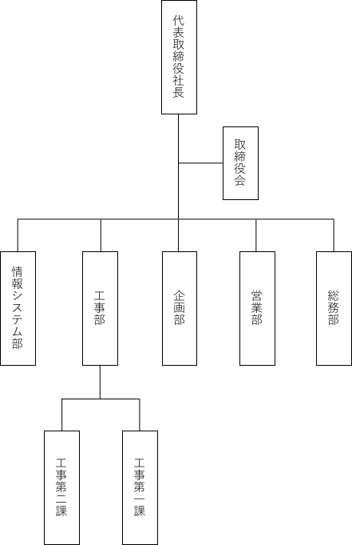

経営理念
確かな技術で輝く未来を応援します
私たちは、長年培った製造技術を基に、社会の発展に貢献し続けます。また自由と博愛の精神を胸に、グローバルな視点を持ちつつ、未来へと邁進してまいります。
会社概要
| 商号 | 大和製作所 |
| 所在地 | 〒189-0014 東京都東村山市本町３丁目 イーストビル24階 |
| 代表取締役 | 大和 幸太郎 |
| 設立日 | 1937年3月1日 |
| 資本金 | 10億円 |
| 事業内容 |
製造業務全般に関する請負又は受託 製造特許の保守管理 地域開発、都市開発、宇宙開発、コンサルティング |
| 資格・免許 |
危険物取扱者 衛生管理者 電気工事士 |
沿革
| 1937年 | 3月 | 大和製作所を設立。 | |
| 1975年 | 1月 | 米田造船工業を吸収合併。 | |
| 6月 | ジャパン航空株式会社を傘下に。 東証マザーズに上場。 有限会社から株式会社に変更。 |
||
| 2002年 | 1月 | ネジの製造に関する特許を取得。 | |
| 5月 | 東京に本社を移転。 移転に伴い、本社ビルを建築。 |
||
| 11月 | 沖縄新幹線の開発を受注・着工。 | ||
| 2008年 | 12月 | 東証マザーズから東証二部に昇格。 | |
| 2014年 | 4月 | 米国大手企業と提携。宇宙開発事業に参入。 スペースシャトルおよび国際宇宙ステーション開発に協力。 |
|
| 2018年 | 2月 | SDGsへの賛同・協力を決定。 環境対策にグループ全体で取り組みを始める。 |
|
| 10月 | 東証二部から東証一部へ昇格。 | ||
| 2023年 | 12月 | ISO14001を取得。 |
組織図


所在地
〒189-0014 東京都東村山市本町３丁目 イーストビル24階
電話番号 03-0000-0000